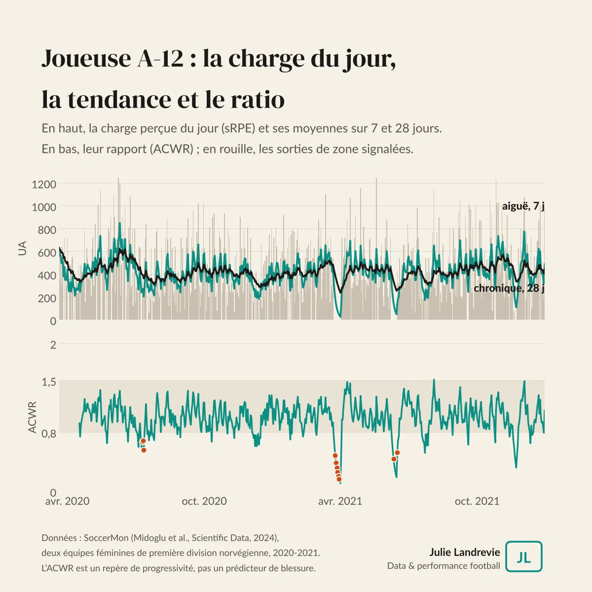

Suivi de charge et de forme en football féminin d’éliteLoad and wellness monitoring in elite women’s football
Quelles joueuses s’écartent de leur charge habituelle, sans noyer le staff sous les alertes ?Which players are drifting from their usual load, without drowning the staff in alerts?
Voir l’étudeRead the study
Données ouvertes SoccerMon (Midoglu et al., Scientific Data, 2024) : deux équipes norvégiennes de première division, saisons 2020 et 2021, 50 joueuses.
Contrôle qualité d’abord : les fichiers GPS bruts répétaient chaque mesure 10 fois. Sans correction, toutes les distances auraient été multipliées par 10.
Des alertes traitables : contexte de l’équipe, persistance sur 3 jours, regroupement en épisodes. La part de jours en sous-charge passe de 13 % à 2–3 %.
Un ACWR GPS en complément : dans 92 % des pics de course à haute intensité, l’ACWR calculé sur la charge ressentie reste sous le seuil.
Open SoccerMon data (Midoglu et al., Scientific Data, 2024): two Norwegian top-division teams, 2020 and 2021 seasons, 50 players.
Quality control first: the raw GPS files repeated every measurement 10 times. Without the fix, every distance would have been multiplied by 10.
Alerts a staff can handle: team context, 3-day persistence, grouped into episodes. Underload days drop from 13% to 2–3%.
A GPS-based ACWR alongside: in 92% of high-speed running peaks, the ACWR based on perceived load stays below the threshold.

Blessures auto-déclarées et pas de groupe témoin : la piste « avant blessure » reste descriptive. Dans SoccerMon, un jour sans déclaration vaut 0 : aucune alerte n’est émise sous 70 % de jours documentés.
Self-reported injuries and no control group: the pre-injury analysis stays descriptive. In SoccerMon a day without a report is coded 0: no alert is raised below 70% documented days.